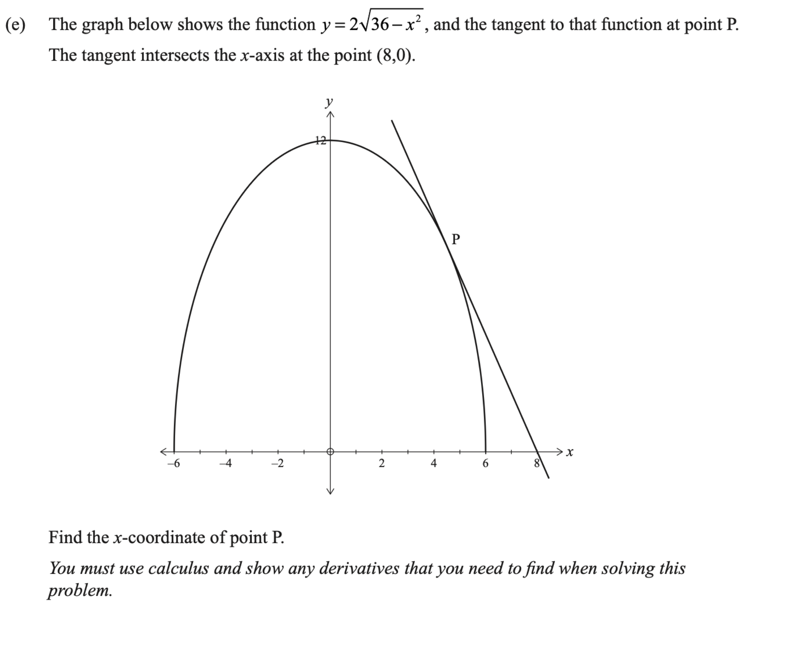

Level 3 Differentiation Walkthrough
2019 Differentiation · Q3(e)
2019 Paper
Question
The graph shows \(y=2\sqrt{36-x^2}\) and its tangent at P. The tangent intersects the \(x\)-axis at \((8,0)\). Find the \(x\)-coordinate of P.
You must use calculus and show any derivatives that you need to find when solving this problem.
Original question scan

First walkthrough idea
Focus to try first
Use the tangent gradient on \(y=2\sqrt{36-x^2}\) to find point \(P\).
Step 1
Differentiate the curve
Use the chain rule on \(y=2(36-x^2)^{1/2}\).
Show the first step’s working
Walkthrough overview
What this question practises
This 2019 walkthrough is part of AS91578 — Apply differentiation methods in solving problems.
Method: Using a tangent intercept to find the coordinate of \(P\).
This is Question 3(e) from the 2019 NCEA Level 3 Differentiation paper for AS91578 — Apply differentiation methods in solving problems. Use the guided hints to practise the method before revealing the full working.
Calc.nz is an independent learning resource. Compare questions, diagrams, and assessment information with the official NZQA resources for AS91578.
Page updated .
Learning summary
Review the method, not only the answer
This walkthrough helps you practise using a tangent intercept to find the coordinate of \(P\). Use the hints to plan the method, then repeat the question without hints and check each step.
Check
Use the derivative for the gradient and the original curve for the point before forming the tangent equation.
Calculus essentials: algebra, logarithms, rules, radians and domains
Continue practising
Try a related question: 2024 Differentiation · Q1(e). Attempt it before opening working, then return to this question later.
- All 2019 Differentiation walkthroughs
- All AS91578 Differentiation years
- Practise more questions using this skill: Tangents and normals